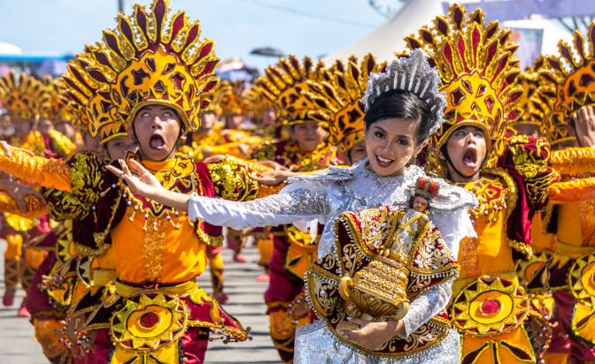
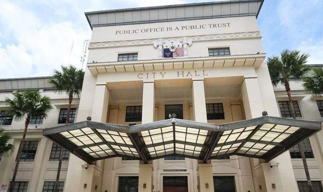
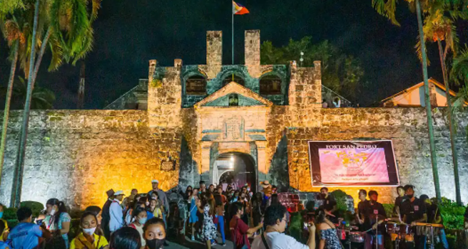
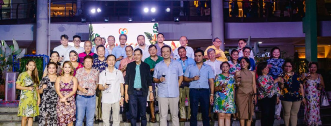
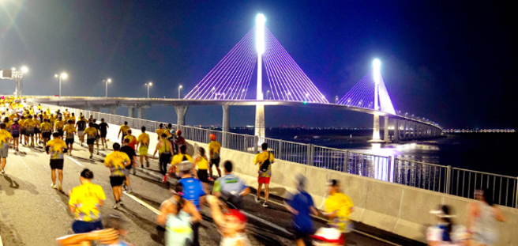

Festival

Sinulog Festival
The Sinulog Festival is a grand cultural and religious festival held in Cebu City to honor the Santo Niño (Child Jesus). It is marked by colorful parades, street dances, and vibrant costumes reflecting the rich history of the region.
January
Notable Events




Cebu City Charter Day
Celebrates Cebu City's independence and cityhood. A historic day of cultural significance.
February
Gabii sa Kabilin
A one-night-only cultural experience in Cebu museums and heritage sites.
May
Cebu Business Month
Highlights Cebu's business and economic success through activities and networking.
June
Cebu City Marathon
A globally recognized marathon event, promoting health and fitness in Cebu.
January